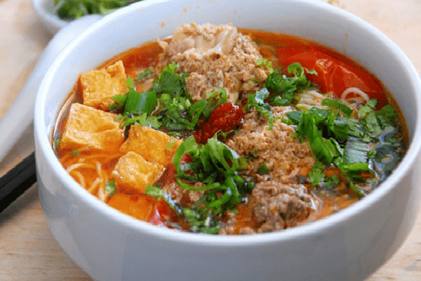

Vietnamese Crab Noodle Soup

Description
Bun rieu, so called Vietnamese crab noodle soup in English, is one of the most popular dishes in Vietnam. Among many other traditional foods such as bun cha or pho, bun rieu brings its own flavors that is not easily tasted in others. The main character of all noodle soup is the broth where the cook combines many different ingredients, just to create the just right sweetness and saltiness. In the broth, people can taste the umami from the pork...
Ingredients:
- Pork
- Crab paste/egg mixture
- Dried Shrimp
- Chicken Broth
- Fish sauce
- Onion
- Chili powders & scallions
- Tomatoes
- Eggs
- Vermicelli noodles
Cook:
- You need to par boil the pork first. Put the pork into a pot filled with enough water so that the pork is totally submerged, then heat up whole pot until it boils. Strand the pork, remove the dirty water.
- Now, put the partly cooked pork back to into pot, pour in fresh clean water and boil till it bubbles up. Yet, you have remove all impurities floating up before the water boils. Now decrease the temperature and let it simmer for about 1.5 hours
- Prepare the coloring mixture, you need to stir-fry scallions, tomatoes and chili powders with oil. After one and a half hours, add the mixture to the broth. Make sure it brings up a beautiful red color dotted with green scallions. Simmer in 30 minutes more.
- Whisk the eggs with crab mixture in a small bowl, once the soup is simmered for 30 minutes, add in the crab/egg mixture, fish sauce and chicken broth. Stir everything together. Once it's done, the crab mixture should float on the surface with brownish color.
- Adjust the taste however you like, but all flavors combined perfectly is the best. You don't want it bland or too salty. Put the cooked vermicelli noodle in a medium-sized bowl, then ladle the soup over. Sprinkle green onion on top of the dish, now it is ready to be served.